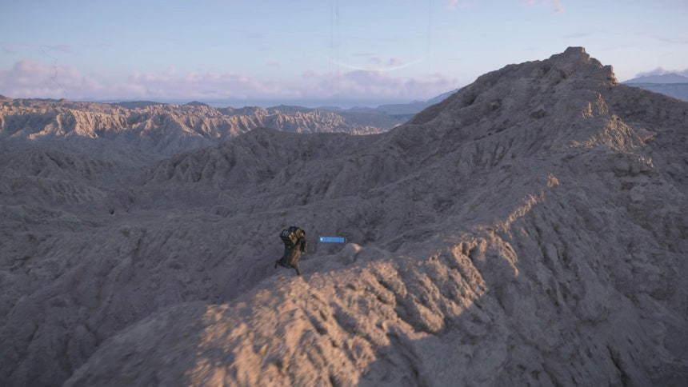
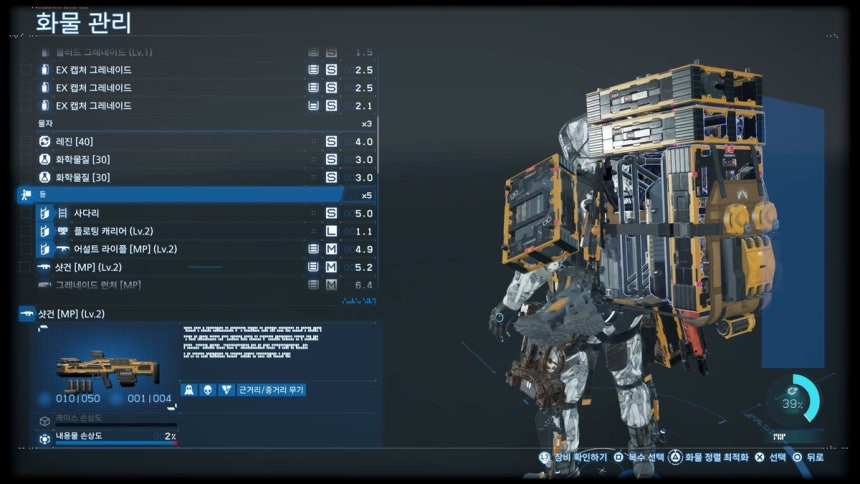
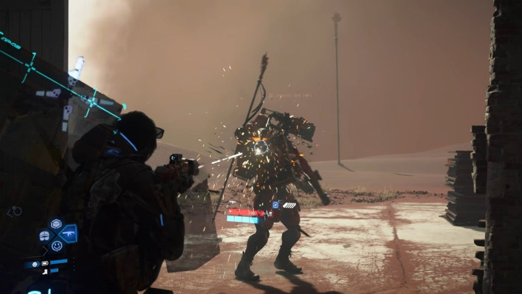
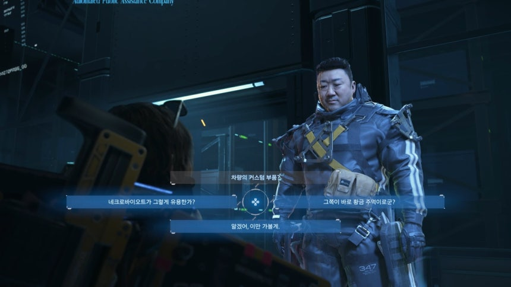

Portfolio Details
Project information
- Category: GameColum
- Title: DeathStranding2
- Project date: 07.02.2025
- Project URL: https://velog.io/@okj26701/AI%EC%99%80-%EA%B2%8C%EC%9E%84-%EB%8D%B0%EC%8A%A4-%EC%8A%A4%ED%8A%B8%EB%9E%9C%EB%94%A9-2%EA%B0%80-%EA%B2%8C%EC%9E%84%EC%97%85%EA%B3%84%EC%97%90-%EB%8D%98%EC%A7%80%EB%8A%94-%EB%A9%94%EC%8B%9C%EC%A7%80
게임칼럼
AI와 게임-'데스 스트랜딩 2'가 게임업계에 던지는 메시지
AI와 게임-'데스 스트랜딩 2'가 게임업계에 던지는 메시지
'게임은 종합예술'이라는 말이 있다. 게임은 시나리오와 2D·3D 아트, 음악, 배우의 연기를 프로그래밍을 통해 엮어낸 하나의 예술 작품이라는 관점이 담긴 표현이다. 하지만 정작 이런 구호를 외치는 게임업계가 내놓은 게임들을 살펴보면 진부한 소재와 맹독성 BM(수익모델)을 결합한 '상품'이 대다수를 차지했던 것이 부정할 수 없는 사실이다. 이런 흐름은 출시 후에도 소액 결제를 통한 수익을 지속해서 창출하는 라이브 서비스 게임이 업계 대세가 되면서 더욱 강해졌다. 게임은 갈수록 플레이하기 쉬워졌고, 서사구조는 단순해졌으며, 교묘하게 플레이어의 지갑을 여는 방향으로 설계돼왔다. 액션 게임의 거장 코지마 히데오(小島秀夫) 감독이 지난 26일 내놓은 '데스 스트랜딩 2: 온 더 비치'는 이런 게임업계의 흐름에 도전하는 문제작이다.
압도하는 대자연 위에 얹은 파격적인 서사와 게임플레이 '데스 스트랜딩 2'의 장르는 한 마디로 배달 시뮬레이터다.
플레이어는 파괴된 지구에서 고립돼 살아가는 소수의 사람 사이에서 직접 등짐을 이거나 오토바이, 트럭을 타고 물자를 배송하는 배달부 '샘 포터 브리지스'의 시점에서 게임을 플레이하게 된다. '데스 스트랜딩 2'의 무대가 되는 멕시코와 호주의 자연환경은 현실보다 더 현실처럼 느껴질 정도로 세밀하고 아름답게 묘사돼있다. 일부 스토리 구간에서 플레이어가 줌아웃 되며 펼쳐지는 대자연의 장엄함은 화면 바깥의 플레이어를 압도할 정도다. 사실적인 그래픽 위에 올린 연출과 시스템은 전작보다도 더 뜬금없고 기괴해진 채로 돌아왔다. 등장인물들은 진지한 대화 중에도 갑자기 엄지손가락을 치켜세우며 '좋아요'를 날리고, 갑자기 경쾌한 댄스곡과 함께 춤을 추기도 한다. 기업 인적성 검사에서 나올 법한 공간지각력 퀴즈가 전혀 예상치 못한 곳에서 튀어나오는 일도 있다.
'데스 스트랜딩 2'의 이런 기괴한 디자인은 게임플레이 메커니즘에도 녹아있다. 사람의 영혼이 깃든 목각인형을 허리춤에 달고 다니다 하늘로 던져 드론처럼 정찰시키거나, 공중 부양하는 관짝을 스케이트보드처럼 타고 다니다 적이 나타나면 그 안으로 숨는 등 기발한 상상력으로 가득 차 있다. 그렇다고 '데스 스트랜딩 2'가 파격적인 비주얼만 강조한 게임은 아니다. 게임 속에서 물자를 배송하는 여정은 적절한 긴장감과 몰입감, 카타르시스를 유발하는 순간들로 치밀하게 설계돼있다. 짐 무게가 조금만 무거워지면 무게가 한쪽으로 쏠려서 바로잡아주지 않으면 넘어지게 되고, 차량을 몰 때도 바위에 부딪히면 화물이 빠르게 손상되기에 플레이어는 항상 긴장감을 갖고 플레이하게 된다.

배송 루트에는 물자를 빼앗으려는 도적들이나 사후세계에서 넘어온 존재인 'BT' 들이 있는데 이들을 물리치면 두둑한 추가 보상이 주어진다. 전작보다 전투의 비중도 훨씬 커졌기에, 플레이어는 배송에 필요한 물건뿐 아니라 무기도 신경 써서 챙겨야 한다. 험한 코스를 돌파하고 나면 제작진이 엄선한 아티스트들의 음악이 자동으로 재생된다. 이는 광활하고도 쓸쓸한 느낌을 주는 자연환경과 대비되며 플레이어의 감정을 '폭발'시킨다.
게임은 스트라타젬 업그레이드, 함선 모듈 강화, 스킬 성장을 통해 점점 더 강력해지는 구조입니다. 하지만 요청서, 메달, 샘플, 배틀 포인트 등 재화가 지나치게 세분화되어 있고, 핵심 재화인 샘플의 수집 난이도가 높은 점은 단점으로 꼽힙니다. 중반 이후에는 이런 단점이 희석되지만, 초반 삽질이 불가피하다는 점은 분명 개선 여지가 있습니다.
AI가 사람 대체하는 시대, '연결'이 갖는 의미는 코지마 감독은 2019년 한국을 찾았을 당시 인터뷰에서 '데스 스트랜딩'을 연결에 대한 이야기로 정의했다.
공교롭게도 '데스 스트랜딩'이 발매된 이듬해는 코로나19가 전 세계를 휩쓸며 사회경제적 활동이 위축되고, 비대면 소통이 자리잡은 시기였다. 연결에 대한 코지마 감독의 깊은 고찰은 '데스 스트랜딩 2'에서도 엿보인다. 게임의 핵심 소재 중 하나는 생과 사의 경계 공간인 '해변'을 이용한 초광속 통신망 '카이랄 네트워크'다. 주인공 샘은 1편의 북아메리카에 이어 2편에서는 멕시코와 호주 대륙 각지를 돌아다니며 카이랄 네트워크를 확장한다. 카이랄 네트워크의 확장은 서로 고립되어 살아가는 사람들을 하나로 연결함과 동시에, 'APAS'라는 인공지능 배송 시스템의 영향력도 키우게 된다. 게임 속에서 만나는 대부분의 생존자들은 카이랄 네트워크의 확장을 반기고, APAS의 네트워크에 편입되는 것을 진심으로 바라고 있다. 생성형 인공지능(AI)을 무기 삼아 전 세계적인 영향력을 확대하고 있는 빅테크 기업을 연상시키는 대목이다.
코지마 감독은 게임 속 등장인물의 입을 빌어, 기술을 활용할지언정 연결의 주체는 빅테크가 아닌 '사람'이 되어야 한다는 메시지를 전한다. 많은 게임이 제작비를 아끼려고 생성형 AI를 앞다퉈 도입하는 시대다. 캐릭터의 원화와 의상은 물론 3D 모델, 애니메이션까지 AI의 도움을 받아 만든다. 하지만 '데스 스트랜딩 2'는 실제 배우의 음성과 얼굴, 동작 연기를 직접 게임에 구현했다. 미국 드라마 '워킹 데드' 시리즈에 출연한 배우 노먼 리더스와 프랑스 배우 레아 시두는 각각 주인공 샘과 주요 등장 인물인 프래자일 역할을 맡아 열연을 펼쳤다. 데스 스트랜딩 2에 등장하는 새로운 등장인물 투모로우 역할의 엘 패닝, 레이니 역의 쿠츠나 시오리, 닐 바나 역의 루카 마리넬리의 연기도 인상깊다. 한국계 배우 중에서는 마동석이 스토리 중반에 자주 들르게 될 배송 센터의 대표 캐릭터로 출연한다. 게임 속 세상이라도 그 안의 이야기는 실존하는 사람의 연기를 통해 진정성 있게 채우고 싶었던 감독의 철학이 그대로 드러나는 대목이다. 물론 이런 시도는 코지마 히데오라는 스타 개발자의 높은 인지도와 그의 종잡을 수 없는 개발 철학을 모두 받아준 퍼블리셔 소니의 지원이 없었다면 결코 실현되지 못했을 것이다. 하지만 '데스 스트랜딩 2'가 '연결'에 대한 이야기를 풀어내고 메시지를 던지는 특유의 방식은 최근 들어서야 PC·콘솔 게임에 도전하며 내러티브 전달 방식을 고민하는 한국 게임 업계에도 시사하는 바가 크다.